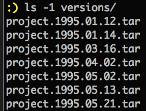
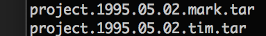

GIT Version Control
Presented by Tim Oram
Created in cooperation with the Computer Technology Society of NL
Why you should use a VCS?
What and why GIT?
The basics of using GIT?
What is version control system?
Software development workflow
Create
Edit
Save
Repeat
You may want to know...
Why you made a change?
When you made the change?
What changes were made?
...at any time in the future.
Multiple developers?
Who made the change?
Early Version Control

You get the when, the what,
but not the why
and tarballs are difficult.
Multiple Developers

You get the who,
but it is very messy
and which version is newer?
History of GIT
Developed by Linus Torvalds in 2005
for the linux kernel because
the previous tool they used was no longer available
and everything else sucked.
Why did the others suck?
They were either slow, complicated
did not handle large projects well,
or were not distributed.
Why use GIT?
GIT is fast!
Has one of the best branching systems.
Fully distributed, no central server.
Local, no network connection required.